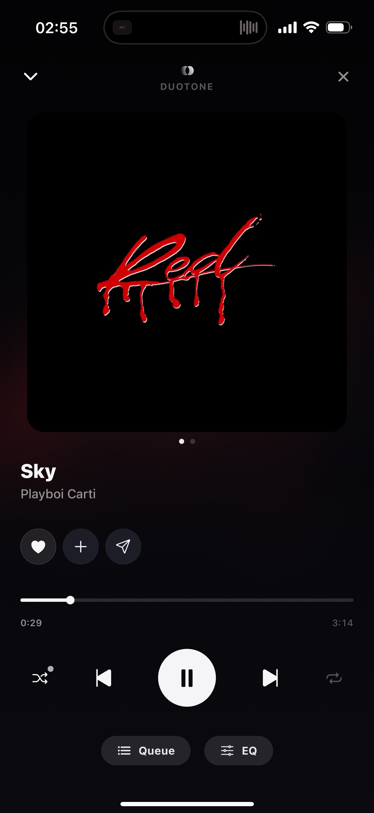
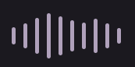

Currently Playing
O mesmo leitor, mais coeso.
Atualizar a apresentação do leitor expandido a partir da última preview: Queue e EQ permanecem em baixo, integrados nos controlos de reprodução; play mais pequeno; símbolo e DUOTONE centrados no topo.
Estado: implementação no código concluída em 08/09/2026; validação em iPhone real pendente. As referências visuais abaixo documentam a direção proposta. A imagem “Antes” é a captura fornecida pelo utilizador; “Depois” é uma simulação visual, não uma build funcional.
Esta intervenção altera a apresentação e a organização dos acessos. Nenhuma funcionalidade, opção, permissão, estado, gesto ou integração pode desaparecer por não estar representada na preview. Os componentes e comandos reais da app são a referência funcional. Uma ação deslocada deve continuar acessível e executar o mesmo comportamento.
Resultado da implementação
Integrada sobre as alterações recentes do Claude, preservando o arrasto automático da fila e o acesso Manage ao Jam. Concluídos os tamanhos e espaçamentos, a grelha comum de reprodução/Queue/EQ e os menus por faixa. As remoções pendentes são recusadas se a fila mudar, a faixa passar a atual ou começar uma sessão.
Verificações aprovadas: typecheck, suite completa, teste isolado dos handlers de QueueSheet (node scripts/test-currently-playing-ui.cjs), lint dos ficheiros alterados sem erros nem avisos novos e exportações Expo para iOS/Hermes e web. Dependências, lockfile e scripts npm mantidos.
O leitor React Native foi inspecionado numa página de QA via React Native Web a 390×844 e 320×568, com dados locais e sem motor de áudio. Confirmados alinhamento, menu da fila, remoção da faixa certa e acesso ao painel real de EQ. A página de QA não usa conta de produção. Os testes de handlers substituem hooks e superfícies nativas, por isso não validam gestos físicos ou transições de Modals em iOS.
Pendente em dispositivo: áudio real, VoiceOver/texto aumentado, gestos de arrasto e fecho, transições entre folhas nativas e sessão Jam em dois iPhones. Os bundles exportados não são um IPA nem uma instalação no telefone.
Antes e depois
Antes · app atual na captura
Ações numa linha própria, play maior e Queue/EQ em cápsulas com larguras diferentes.

Depois · direção visual proposta
Ícones Queue/EQ com legenda discreta, alinhados sob anterior/seguinte e sem cápsulas.
Alterações a implementar
| Elemento | Direção proposta | Condição de preservação |
|---|---|---|
| Queue e EQ | Em baixo. Partilhar as colunas dos controlos de reprodução: Queue sob anterior, EQ sob seguinte. Ícones de cerca de 23 pt e legendas discretas por baixo; sem fundo em cápsula. | Abrir os mesmos painéis, com feedback tátil e áreas de toque de pelo menos 44 × 44 pt. |
| Play / pause | Círculo de aproximadamente 54 pt, ícone de 21 pt, mantendo o centro visual do conjunto. | Conservar todos os estados, bloqueios, loading e comandos existentes. Não reduzir a área de toque abaixo do mínimo. |
| Marca no topo | Preservar símbolo e DUOTONE centrados, com minimizar à esquerda e mais opções à direita. | Minimizar continua distinto de fechar. A opção fechar reutiliza o fluxo atual, incluindo confirmações de Jam. |
| Ações da música | Coração junto ao título; adicionar a playlist e partilhar acessíveis pelo menu superior. | Reutilizar os fluxos reais de guardar, playlists e partilha com amigos, incluindo restrições offline e estados ativos. |
| Fila | Tocar na linha seleciona a música quando permitido. Os três pontos à direita abrem ações, sem repetir um botão play. | Conservar remoção e arrasto existentes; manter as regras distintas da fila local e do Jam. O toque nas opções não pode iniciar reprodução. |
| EQ | Ícone de barras verticais, semelhante à referência abaixo, com a mesma espessura visual dos restantes ícones. | Manter o equalizador real, velocidade, perfis, dez bandas e persistência; não substituir pelo painel simplificado da preview. |
| Capa e espaçamento | Conservar capa em destaque, ambiente cromático e hierarquia título/artista. Aproximar os controlos inferiores. | Preservar navegação de letras, artista, gestos, animações e adaptações a safe area e acessibilidade. |

As medidas da preview são referências em escala lógica, a ajustar ao layout React Native e à escala de texto. Não copiar píxeis da captura original. Queue/EQ no topo e cápsulas grandes ficam excluídos desta direção. As alternativas da preview e a linha opcional “A seguir” não entram automaticamente no âmbito.
Mapa da implementação
A inspeção do código aponta para src/components/PlayerRoot.tsx (layout, ações e abertura das folhas), QueueSheet.tsx (linhas e ações da fila) e EqualizadorSheet.tsx (painel de EQ e velocidade). Reutilizar AddToPlaylistSheet, ShareFriendSheet e os padrões existentes de menus, ícones, animação e toque.
src/lib/closePlayer.ts, ArtworkLyricsCube, stores, motores de reprodução e regras do Jam são dependências a preservar. Evitar alterações de lógica nestas áreas para acomodar o desenho. Queue e EQ devem continuar como folhas irmãs da vista do leitor, mantendo o comportamento de abertura e gestos.
1 · Registar a referência funcional
Inventariar todos os acessos e estados do leitor no checkout de implementação. Registar screenshots e comportamento de reprodução, letras, fila, EQ, menus, mini-player, modo offline e Jam. Associar cada ação existente ao seu destino após a reorganização.
Entrega: mapa de ações antes/depois e resultados de base dos checks existentes.
2 · Ajustar o layout do leitor
Aplicar marca, espaçamentos e tamanhos; usar uma grelha comum para reprodução e ferramentas inferiores. Conservar o play reduzido e Queue/EQ no rodapé. Reposicionar os acessos a favoritos, playlists, partilha e fecho ligando-os aos mesmos handlers, sem remontar o motor de áudio.
Entrega: apresentação proposta com todas as ações reais acessíveis e os estados condicionais preservados.
3 · Integrar fila e ícone EQ
Na fila, separar o alvo de seleção da música do alvo dos três pontos. A app já tem arrasto e remoção: preservá-los e não confundir o controlo de arrasto com play. As ações do menu devem atuar na faixa da linha, não necessariamente na faixa que está a tocar. Em Jam, conservar as restrições atuais e os acessos à folha de sessão.
Substituir apenas o ícone de acesso ao EQ; reutilizar integralmente o painel nativo. Preferir a biblioteca existente ou um pequeno componente de barras sem novas dependências.
Entrega: seleção e ações independentes, com menus, fila e equalizador funcionais.
4 · Validar e comparar
Executar a matriz abaixo e comparar screenshots nas mesmas dimensões e estados. Verificar iPhone pequeno e grande, texto aumentado, VoiceOver e restantes plataformas suportadas. Confirmar que abrir/fechar painéis e reorganizar elementos não interrompe o áudio nem reinicia a faixa.
Entrega: screenshots da implementação real, checks executados e lista explícita de qualquer validação ainda pendente em dispositivo.
Matriz obrigatória de não regressão
- Reprodução: play/pause, anterior/seguinte, seek, duração/progresso, loading/erro, fim de fila, repeat off/all/one e shuffle normal/inteligente.
- Biblioteca e navegação: guardar/remover favoritos, abrir artista, adicionar a playlists e partilhar, conservando notificações e bloqueios offline.
- Fila: atual e próximas, seleção autorizada, ordem, arrasto, remoção, fila vazia, listas longas e ausência de reprodução ao tocar nos três pontos.
- EQ e velocidade: perfis, ajuste das dez bandas, valores guardados e aplicação real ao áudio; manter todas as opções atuais do painel.
- Jam: indicador e acesso à sessão, fila partilhada, anfitrião/convidado com e sem controlo, sincronização, sair/terminar e confirmação de fecho. Nenhum novo acesso pode contornar permissões.
- Ciclo de vida: minimizar/expandir, fechar por botão e gesto, mini-player, letras/cubo, acessibilidade e animações existentes; conservar comportamento de áudio em segundo plano, lock screen e interrupções.
- Motor e dados: preservar cache/downloads, preparação da próxima faixa, crossfade e regras vigentes, restauração de estado e preferências. A redução visual não justifica alterações nestes sistemas.
Para a implementação: npm run typecheck, npm test e npm run lint separadamente. Comparar os avisos de lint com a base e não introduzir novos problemas nos ficheiros tocados. Se mudar a gestão de eventos ou permissões, acrescentar testes de comportamento relevantes. Não integrar lint em npm test, não usar o preset recommended de React Hooks e não alterar dependências/lockfile sem necessidade.
Critérios de conclusão
- Queue e EQ mantêm-se em baixo, simétricos, visualmente integrados e sem cápsulas grandes; marca centrada e play reduzido.
- Todas as ações inventariadas continuam disponíveis com os mesmos efeitos, estados e permissões. As funcionalidades ausentes da preview continuam presentes na app.
- Texto, gestos, áreas de toque e folhas funcionam sem cortes, sobreposições ou conflitos, incluindo offline e Jam.
- A implementação real foi comparada com este plano e verificada; resultados e limitações em dispositivo estão registados.
Regra de decisão: se houver conflito entre a simplificação visual e uma funcionalidade existente, adaptar o desenho para manter a funcionalidade. A preview é referência estética; o comportamento real da app deve ser preservado.